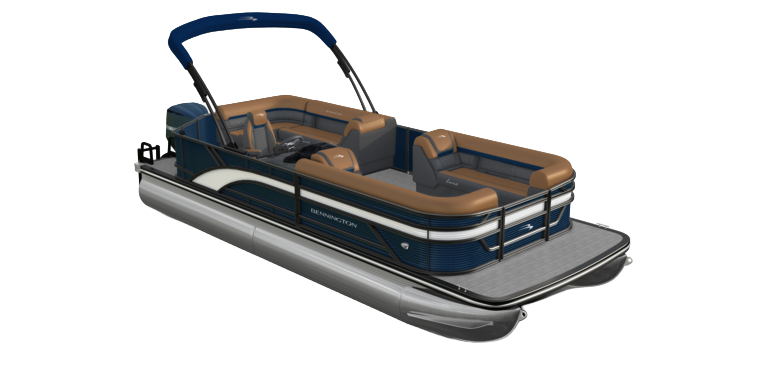

INFO
Boat Specefications
- MSRP: $86,141
- LOA: 22'-11.5"
- Beam: 8'6"
- Engine: Mercury 150XL
- Performance Package: SPS
- Floorplan: Stern Radius
- Exterior Main Color: Sunset Red
- Exterior Accent Color: Metallic Radiant Sand
- Rail Color: Black
- Interior Main Color: Modesto Brown
- Interior Accent Color: Sunset Red
- Interior Furniture Style/Trim: Luxe
What's New for 2027
2027 updates
- Dayshade Bimini W Stowable Bow Dayshade: The manual Dayshade Bimini provides quick, dependable shade with a lightweight design that makes setup fast and effortless. Without motors, electronics, or complex mechanisms, it delivers reliable shade and easy maintenance season after season. Paired with the stowable bow dayshade, boaters can enjoy enhanced sun coverage throughout the vessel while maintaining a clean, appearance when the shade is not in use.
- Metallic Radiant Sand Exterior Accent Color: Radiant Sand is a warm, sun-washed beige with soft taupe undertones that evokes the relaxed elegance of coastal living. As part of Bennington's refined color collection, this versatile hue offers a clean, contemporary appearance that enhances every design detail while preserving a cohesive, upscale aesthetic.
- Stage 1 Audio Package: Equipped with a Rockford Fosgate PMX-1 headunit and four RM speakers, Stage 1 Audio delivers crisp, premium sound throughout the boat. Designed as the starting point of Bennington's stage audio offerings, customers can upgrade all the way to Stage 4 on the S-Series for even more power, deeper bass, and an immersive listening experience.
- Comfort Step Ladder: Features wide, stair-style steps that provide easier, more comfortable boarding from the water. The ergonomic design improves stability and confidence for swimmers of all ages, creating a safer and more enjoyable on-water experience.
- New Ski Tow Bar: Ready for your next watersports adventure, Bennington's new reinforced ski tow bar is built to meet the latest industry towing standards for increased strength and durability. The upgrade design delivers added confidence when towing skiers and riders, while seamlessly integrating with the boat's premium fit and finish. More capibility, more confidence, and more fun for everyone on board.
Why This Boat
Key Selling Points
- Luxe trim wraps the popular Stern Radius layout in premium upholstery and finishes.
- Mercury 150XL with the SPS package for responsive, all-around performance.
- Wraparound stern seating creates a social hub for family and friends.
- Eye-catching Sunset Red with Radiant Sand accents and a warm Modesto Brown interior.
- A full 22-foot size balances spacious seating with easy handling and ownership.